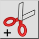
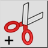
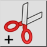
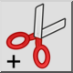

Klipp med referens
Verktygsfält / ikon:
 

Meny: Redigera > Klipp med referens
Genvägar: Ctrl+Shift+X (Mac: ⇧⌘X) | R, T
Kommandon: cutwithreference | rt
Detta är en automatisk översättning.
Verktygsfält / ikon:
 

Meny: Redigera > Klipp med referens
Genvägar: Ctrl+Shift+X (Mac: ⇧⌘X) | R, T
Kommandon: cutwithreference | rt
Verktyget Klipp med referens fungerar som verktyget Kopiera med referens med den enda skillnaden att de markerade enheterna tas bort från den aktuella ritningen efter att ha kopierats till klippbordet